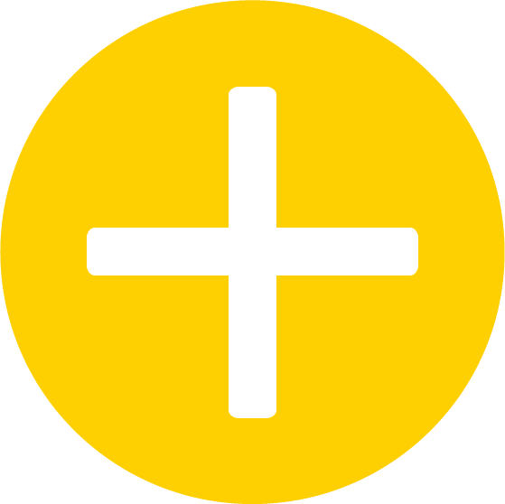

<ion-header>
  <ion-toolbar>
    <ion-buttons slot="start">
      <ion-menu-button menu="volunteer"></ion-menu-button>
    </ion-buttons>
    <ion-title>Home</ion-title>
    <ion-icon name="search" slot="end" margin></ion-icon>
  </ion-toolbar>
</ion-header>
<ion-content>
  <ion-grid *ngIf="loading">
    <ion-row align-items-center justify-content-center>
      <div *ngIf="isLoading" text-center>
        <ion-spinner name="crescent" color="primary"></ion-spinner>
      </div>
    </ion-row>
  </ion-grid>
  <ion-grid>
    <ion-row ion-justify-content-centre no-padding no-margin>
      <ion-col size="3" no-padding>
        <ion-button color="secondary" style="font-weight: bold;" (click)="changeCategory('latest')">Latest</ion-button>
      </ion-col>
      <ion-col size="4" no-padding>
        <ion-button color="secondary" style="font-weight: bold;" (click)="changeCategory('popular')">Popular</ion-button>
      </ion-col>
      <ion-col size="5" no-padding>
        <ion-button color="secondary" style="font-weight: bold;" (click)="changeCategory('ending_soon')">Ending Soon</ion-button>
      </ion-col>
    </ion-row>
  </ion-grid>
  <ion-grid no-padding>
    <ion-col style="position: absolute; bottom: 10px;">
        <ion-button color="secondary" class="m-10" routerLink="/pages/create-event">
          
        </ion-button>
    </ion-col>
  </ion-grid>
    <ion-grid no-padding no-margin>
      <ion-row>
        <ion-col size="12">
          <ion-list *ngIf="!Loading">
              <ion-item-sliding *ngFor="let item of events.data" #slidingItem>
              <ion-item class="card">
                <ion-thumbnail slot="start">
                  
                </ion-thumbnail>
                <ion-label>
                  <h1>{{ item.title }}</h1>
                  <div class="item-details">
                    <ion-text color="primary">{{ item.description }}</ion-text>
                  </div>
                </ion-label>
                <ion-button color="secondary" (click)="goToDetails(item)">Read More</ion-button>
              </ion-item>
            </ion-item-sliding>
          </ion-list>
        </ion-col>
      </ion-row>
    </ion-grid>
</ion-content>
